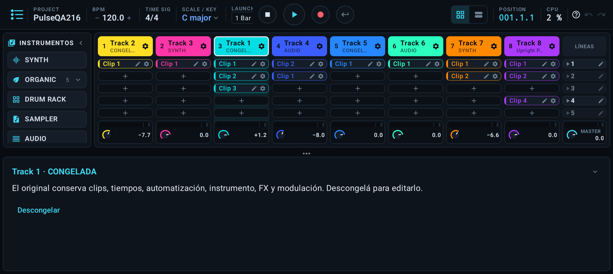

Session View
Captura de producto · AndroidLa Session View organiza ocho pistas y cinco espacios por pista en un entorno preparado para interpretar ideas en tiempo real. Activá clips y Líneas con entradas cuantizadas; el mixer permanece al alcance de la mano.
Explorar herramientas